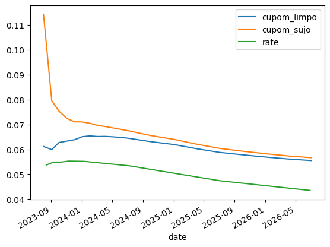
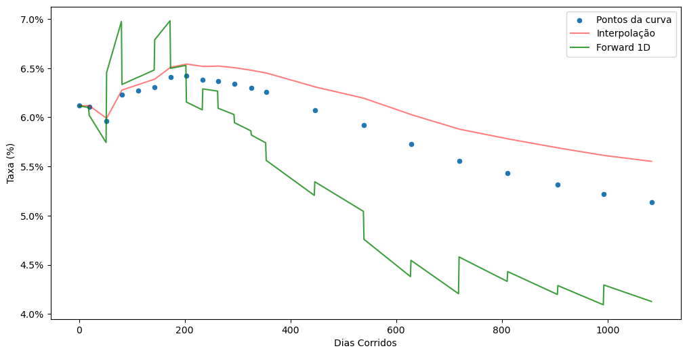
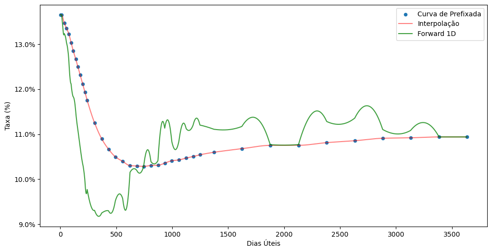
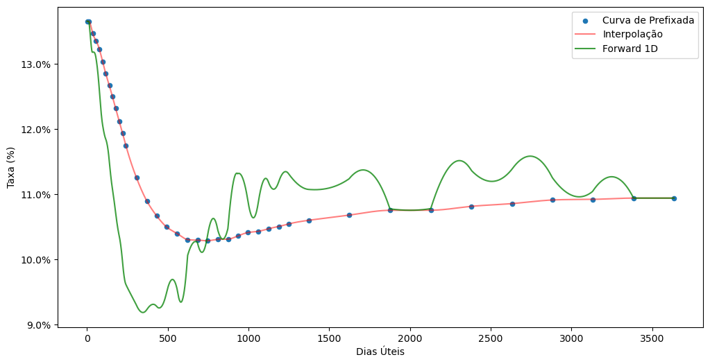

import os
os.environ["BRASA_DATA_PATH"] = "D:\\brasa"
import brasaVamos construir as curvas de cupom cambial, limpo e sujo, da B3 utilizando a biblioteca QuantLib.
Primeiramente vou fazer o setup do projeto brasa definindo o repositório que contém os dados. Lembrando que o projeto brasa é um projeto em release alpha que venho trabalhando para organizar dados de fontes públicas.
Os demais pacotes importados são o setup básico que inclui: pandas, numpy, datetime, matplotlib e pyarrow.
from datetime import datetime
import QuantLib as ql
import pandas as pd
import numpy as np
import pyarrow.compute as pc
import matplotlib.ticker as mtickerVou trabalhar com a data de referência 2023-07-14. Para esta data vamos começar carregando os contratos futuros de dólar (DOL) e taxa DI (DI1) negociados na B3. Utilizo o pacote brasa para obter os dados de preços de ajuste dos contratos futuros da B3.
refdate = datetime(2023, 7, 14)
fut_dol = (brasa
.get_dataset("b3-futures-dol")
.filter(pc.field("refdate") == refdate)
.to_table()
.to_pandas())
fut_di1 = (brasa
.get_dataset("b3-futures-di1")
.filter(pc.field("refdate") == refdate)
.to_table()
.to_pandas())Agora vamos pegar a taxa DI para a data de referência utilizando o dataset de indicadores econômicos divulgado pela B3. Isso é importante porque estes dados são utilizados pela B3 na construção das curvas.
cdi = (brasa
.get_dataset("b3-economic-indicators-price")
.filter(pc.field("refdate") == refdate)
.filter(pc.field("commodity") == "DI1")
.filter(pc.field("symbol") == "RTDI1")
.to_table(columns=["price"])
.to_pandas().iloc[0,0]) / 100Preciso ainda obter as cotações de dólar, e acredite, temos diversas cotações de dólar. As cotações de dólar são referentes à data de referência e ao dia anterior. Para obter estes pontos de forma higiênica, vou fazer o setup da QuantLib e utilizar o calendário brasileiro para filtrar os dados nas datas de interesse, a data de referência e o dia anterior.
today = ql.Date().from_date(refdate)
ql.Settings.instance().evaluationDate = today
calendar = ql.Brazil(ql.Brazil.Settlement)
calendar_act = ql.NullCalendar()df_econ_ind = (brasa
.get_dataset("b3-economic-indicators-price")
.filter(pc.field("refdate") >= calendar.advance(today, ql.Period(-1, ql.Days)).to_date())
.filter(pc.field("refdate") <= refdate)
.filter(pc.field("commodity") == "DOL")
.to_table()
.to_pandas())
df_econ_ind| refdate | commodity | symbol | description | price | |
|---|---|---|---|---|---|
| 0 | 2023-07-13 | DOL | RTDOLCL | DÓLAR CUPOM LIMPO - CÁLCULADO PELA B3 | 4.7922 |
| 1 | 2023-07-13 | DOL | RTDOLD1 | DÓLAR B3 SPOT - 1 DIA | 4.7949 |
| 2 | 2023-07-13 | DOL | RTDOLD2 | DÓLAR B3 SPOT - 2 DIAS | 4.7967 |
| 3 | 2023-07-13 | DOL | RTDOLT1 | PTAX800 VENDA | 4.8038 |
| 4 | 2023-07-14 | DOL | RTDOLCL | DÓLAR CUPOM LIMPO - CÁLCULADO PELA B3 | 4.7896 |
| 5 | 2023-07-14 | DOL | RTDOLD1 | DÓLAR B3 SPOT - 1 DIA | 4.7901 |
| 6 | 2023-07-14 | DOL | RTDOLD2 | DÓLAR B3 SPOT - 2 DIAS | 4.7905 |
| 7 | 2023-07-14 | DOL | RTDOLT1 | PTAX800 VENDA | 4.7957 |
Como podemos observar, para cada data de referência temos 4 cotações de dólar:
- Dólar cupom limpo cálculado pela B3 a partir do casado
- Dólar spot para liquidação em D+1
- Dólar spot para liquidação em D+2
- PTAX800 cotação de venda
Precisamos pegar a cotação da PTAX800 (apenas PTAX) do dia anterior para calcular o cupom sujo.
fut = fut_dol.merge(fut_di1, on=["refdate", "maturity_date", "business_days"], suffixes=("_dol", "_di1"))refdate_1 = datetime(2023, 7, 13)
ptax_1 = df_econ_ind.loc[(df_econ_ind["refdate"] == refdate_1) & (df_econ_ind["symbol"] == "RTDOLT1"), "price"].item()
di1_factor = 100000 / fut["settlement_price_di1"]
dol_factor = fut["settlement_price_dol"] / (ptax_1 * 1000)fixing = [calendar.advance(d, 1, ql.Days)
for d in [calendar.adjust(ql.Date.from_date(d), ql.Following)
for d in fut["maturity_date"]]]
dc = [calendar_act.businessDaysBetween(today, d) for d in fixing]
fut["fixing"] = [datetime.fromordinal(d.to_date().toordinal()) for d in fixing]
fut["cupom_sujo"] = (di1_factor / dol_factor - 1) * 360 / dcspot = df_econ_ind.loc[(df_econ_ind["refdate"] == refdate) & (df_econ_ind["symbol"] == "RTDOLCL"), "price"].item()
di1_factor = (100000 / fut["settlement_price_di1"]) / ((1 + cdi) ** (1/252))
dol_factor = fut["settlement_price_dol"] / (spot * 1000)dc = [calendar_act.businessDaysBetween(calendar.advance(today, 2, ql.Days), ql.Date.from_date(d)) for d in fut["fixing"]]
fut["cupom_limpo"] = (di1_factor / dol_factor - 1) * 360 / dc
fut["dc_limpo"] = dcus_curve = pd.concat(
[pd.Series([1, 2, 3, 4, 6, 12, 24, 36, 60, 72, 120, 240, 360]) * 30,
pd.Series([5.37,5.49,5.49,5.53,5.52,5.34,4.74,4.35,4.04,3.94,3.83,4.11,3.93]) / 100],
axis=1
)
us_curve.columns = ["dc", "rate"]us_curve["date"] = [datetime.fromordinal(calendar_act.advance(today, d, ql.Days).to_date().toordinal()) for d in us_curve["dc"]]ax = fut[["fixing", "cupom_limpo", "cupom_sujo"]].set_index("fixing").plot()
us_curve[["date", "rate"]].query("date <= '2027-01-01'").set_index("date").plot(ax=ax)<Axes: xlabel='date'>
ZeroCurves
fut| refdate | symbol_dol | maturity_date | settlement_price_dol | business_days | symbol_di1 | settlement_price_di1 | adjusted_tax | fixing | cupom_sujo | cupom_limpo | dc_limpo | |
|---|---|---|---|---|---|---|---|---|---|---|---|---|
| 0 | 2023-07-14 | DOLQ23 | 2023-08-01 | 4804.178 | 12 | DI1Q23 | 99392.59 | 0.136491 | 2023-08-02 | 0.135721 | 0.061177 | 15 |
| 1 | 2023-07-14 | DOLU23 | 2023-09-01 | 4833.290 | 35 | DI1U23 | 98260.92 | 0.134640 | 2023-09-04 | 0.084410 | 0.059905 | 48 |
| 2 | 2023-07-14 | DOLV23 | 2023-10-01 | 4854.760 | 55 | DI1V23 | 97301.37 | 0.133540 | 2023-10-03 | 0.078216 | 0.062771 | 77 |
| 3 | 2023-07-14 | DOLX23 | 2023-11-01 | 4877.237 | 76 | DI1X23 | 96323.37 | 0.132250 | 2023-11-03 | 0.074437 | 0.063326 | 108 |
| 4 | 2023-07-14 | DOLZ23 | 2023-12-01 | 4895.157 | 96 | DI1Z23 | 95439.88 | 0.130340 | 2023-12-04 | 0.072580 | 0.063883 | 139 |
| 5 | 2023-07-14 | DOLF24 | 2024-01-01 | 4910.970 | 116 | DI1F24 | 94589.18 | 0.128450 | 2024-01-03 | 0.072281 | 0.065082 | 169 |
| 6 | 2023-07-14 | DOLG24 | 2024-02-01 | 4931.854 | 138 | DI1G24 | 93678.83 | 0.126640 | 2024-02-02 | 0.071569 | 0.065416 | 199 |
| 7 | 2023-07-14 | DOLH24 | 2024-03-01 | 4945.625 | 157 | DI1H24 | 92926.76 | 0.124960 | 2024-03-04 | 0.070530 | 0.065172 | 230 |
| 8 | 2023-07-14 | DOLJ24 | 2024-04-01 | 4961.281 | 177 | DI1J24 | 92166.00 | 0.123160 | 2024-04-02 | 0.070004 | 0.065219 | 259 |
| 9 | 2023-07-14 | DOLK24 | 2024-05-01 | 4978.755 | 199 | DI1K24 | 91364.04 | 0.121170 | 2024-05-03 | 0.069353 | 0.065054 | 290 |
| 10 | 2023-07-14 | DOLM24 | 2024-06-01 | 4992.892 | 220 | DI1M24 | 90627.95 | 0.119320 | 2024-06-04 | 0.068683 | 0.064787 | 322 |
| 11 | 2023-07-14 | DOLN24 | 2024-07-01 | 5007.325 | 240 | DI1N24 | 89960.88 | 0.117490 | 2024-07-02 | 0.068116 | 0.064513 | 350 |
| 12 | 2023-07-14 | DOLV24 | 2024-10-01 | 5057.083 | 306 | DI1V24 | 87856.48 | 0.112510 | 2024-10-02 | 0.065997 | 0.063097 | 442 |
| 13 | 2023-07-14 | DOLF25 | 2025-01-01 | 5102.537 | 370 | DI1F25 | 85911.65 | 0.108960 | 2025-01-03 | 0.064369 | 0.061937 | 535 |
| 14 | 2023-07-14 | DOLJ25 | 2025-04-01 | 5154.743 | 431 | DI1J25 | 84084.32 | 0.106670 | 2025-04-02 | 0.062389 | 0.060275 | 624 |
| 15 | 2023-07-14 | DOLN25 | 2025-07-01 | 5208.994 | 492 | DI1N25 | 82291.63 | 0.104980 | 2025-07-02 | 0.060669 | 0.058800 | 715 |
| 16 | 2023-07-14 | DOLV25 | 2025-10-01 | 5275.455 | 558 | DI1V25 | 80333.70 | 0.103950 | 2025-10-02 | 0.059487 | 0.057810 | 807 |
| 17 | 2023-07-14 | DOLF26 | 2026-01-01 | 5339.391 | 623 | DI1F26 | 78471.99 | 0.103030 | 2026-01-05 | 0.058410 | 0.056891 | 902 |
| 18 | 2023-07-14 | DOLJ26 | 2026-04-01 | 5411.421 | 684 | DI1J26 | 76646.32 | 0.102950 | 2026-04-02 | 0.057526 | 0.056125 | 989 |
| 19 | 2023-07-14 | DOLN26 | 2026-07-01 | 5481.115 | 745 | DI1N26 | 74869.78 | 0.102850 | 2026-07-02 | 0.056815 | 0.055517 | 1080 |
data = [(ql.Date.from_date(d), r)
for d, r in zip(fut["fixing"], fut["cupom_limpo"])]
data.insert(0, (today, data[0][1]))
dates, yields = zip(*data)dates(Date(14,7,2023),
Date(2,8,2023),
Date(4,9,2023),
Date(3,10,2023),
Date(3,11,2023),
Date(4,12,2023),
Date(3,1,2024),
Date(2,2,2024),
Date(4,3,2024),
Date(2,4,2024),
Date(3,5,2024),
Date(4,6,2024),
Date(2,7,2024),
Date(2,10,2024),
Date(3,1,2025),
Date(2,4,2025),
Date(2,7,2025),
Date(2,10,2025),
Date(5,1,2026),
Date(2,4,2026),
Date(2,7,2026))fut| refdate | symbol_dol | maturity_date | settlement_price_dol | business_days | symbol_di1 | settlement_price_di1 | adjusted_tax | fixing | cupom_sujo | cupom_limpo | |
|---|---|---|---|---|---|---|---|---|---|---|---|
| 0 | 2023-07-14 | DOLQ23 | 2023-08-01 | 4804.178 | 12 | DI1Q23 | 99392.59 | 0.136491 | 2023-08-02 | 0.135721 | 0.061177 |
| 1 | 2023-07-14 | DOLU23 | 2023-09-01 | 4833.290 | 35 | DI1U23 | 98260.92 | 0.134640 | 2023-09-04 | 0.084410 | 0.059905 |
| 2 | 2023-07-14 | DOLV23 | 2023-10-01 | 4854.760 | 55 | DI1V23 | 97301.37 | 0.133540 | 2023-10-03 | 0.078216 | 0.062771 |
| 3 | 2023-07-14 | DOLX23 | 2023-11-01 | 4877.237 | 76 | DI1X23 | 96323.37 | 0.132250 | 2023-11-03 | 0.074437 | 0.063326 |
| 4 | 2023-07-14 | DOLZ23 | 2023-12-01 | 4895.157 | 96 | DI1Z23 | 95439.88 | 0.130340 | 2023-12-04 | 0.072580 | 0.063883 |
| 5 | 2023-07-14 | DOLF24 | 2024-01-01 | 4910.970 | 116 | DI1F24 | 94589.18 | 0.128450 | 2024-01-03 | 0.072281 | 0.065082 |
| 6 | 2023-07-14 | DOLG24 | 2024-02-01 | 4931.854 | 138 | DI1G24 | 93678.83 | 0.126640 | 2024-02-02 | 0.071569 | 0.065416 |
| 7 | 2023-07-14 | DOLH24 | 2024-03-01 | 4945.625 | 157 | DI1H24 | 92926.76 | 0.124960 | 2024-03-04 | 0.070530 | 0.065172 |
| 8 | 2023-07-14 | DOLJ24 | 2024-04-01 | 4961.281 | 177 | DI1J24 | 92166.00 | 0.123160 | 2024-04-02 | 0.070004 | 0.065219 |
| 9 | 2023-07-14 | DOLK24 | 2024-05-01 | 4978.755 | 199 | DI1K24 | 91364.04 | 0.121170 | 2024-05-03 | 0.069353 | 0.065054 |
| 10 | 2023-07-14 | DOLM24 | 2024-06-01 | 4992.892 | 220 | DI1M24 | 90627.95 | 0.119320 | 2024-06-04 | 0.068683 | 0.064787 |
| 11 | 2023-07-14 | DOLN24 | 2024-07-01 | 5007.325 | 240 | DI1N24 | 89960.88 | 0.117490 | 2024-07-02 | 0.068116 | 0.064513 |
| 12 | 2023-07-14 | DOLV24 | 2024-10-01 | 5057.083 | 306 | DI1V24 | 87856.48 | 0.112510 | 2024-10-02 | 0.065997 | 0.063097 |
| 13 | 2023-07-14 | DOLF25 | 2025-01-01 | 5102.537 | 370 | DI1F25 | 85911.65 | 0.108960 | 2025-01-03 | 0.064369 | 0.061937 |
| 14 | 2023-07-14 | DOLJ25 | 2025-04-01 | 5154.743 | 431 | DI1J25 | 84084.32 | 0.106670 | 2025-04-02 | 0.062389 | 0.060275 |
| 15 | 2023-07-14 | DOLN25 | 2025-07-01 | 5208.994 | 492 | DI1N25 | 82291.63 | 0.104980 | 2025-07-02 | 0.060669 | 0.058800 |
| 16 | 2023-07-14 | DOLV25 | 2025-10-01 | 5275.455 | 558 | DI1V25 | 80333.70 | 0.103950 | 2025-10-02 | 0.059487 | 0.057810 |
| 17 | 2023-07-14 | DOLF26 | 2026-01-01 | 5339.391 | 623 | DI1F26 | 78471.99 | 0.103030 | 2026-01-05 | 0.058410 | 0.056891 |
| 18 | 2023-07-14 | DOLJ26 | 2026-04-01 | 5411.421 | 684 | DI1J26 | 76646.32 | 0.102950 | 2026-04-02 | 0.057526 | 0.056125 |
| 19 | 2023-07-14 | DOLN26 | 2026-07-01 | 5481.115 | 745 | DI1N26 | 74869.78 | 0.102850 | 2026-07-02 | 0.056815 | 0.055517 |
zc = ql.ZeroCurve(dates, yields, ql.Business252(calendar), calendar, ql.Linear(),
ql.Compounded, ql.Annual)zc.referenceDate()Date(14,7,2023)zc.nodes()[:5]((Date(14,7,2023), 0.12795336431048324),
(Date(17,7,2023), 0.12795336431046694),
(Date(1,8,2023), 0.12794507014909243),
(Date(1,9,2023), 0.1263153339122755),
(Date(2,10,2023), 0.12534533483937893))biz_days = calendar.businessDaysBetween(today, ql.Date(1,9,2023))
print(zc.zeroRate(biz_days/252, ql.Compounded))
print(zc.zeroRate(ql.Date(1,9,2023), ql.Business252(calendar), ql.Compounded))13.463990 % Business/252(Brazil) Annual compounding
13.463990 % Business/252(Brazil) Annual compoundingdef plot_curve(crv):
i_curve = pd.DataFrame({
"days": list(range(1, curve["business_days"].max())),
"rates": [crv.zeroRate(i/252, ql.Compounded).rate()
for i in range(1, curve["business_days"].max())],
})
f_curve = pd.DataFrame({
"days": list(range(1, curve["business_days"].max())),
"rates": [crv.forwardRate(i/252, (i+1)/252, ql.Compounded).rate()
for i in list(range(1, curve["business_days"].max()))],
})
ax = curve.plot.scatter(x="business_days", y="adjusted_tax", figsize=(12, 6),
label="Curva de Prefixada")
i_curve.plot(x="days", y="rates", c="red", alpha=0.5, ax=ax, label="Interpolação")
f_curve.plot(x="days", y="rates", c="green", alpha=0.75, ax=ax, label="Forward 1D")
ax.set_xlabel("Dias Úteis")
ax.set_ylabel("Taxa (%)")
ax.yaxis.set_major_formatter(mticker.PercentFormatter(xmax=1.0, decimals=1));plot_curve(zc)
czc = ql.CubicZeroCurve(dates, yields, ql.Business252(calendar), calendar,
ql.Cubic(), ql.Compounded, ql.Annual)
plot_curve(czc)
mczc = ql.MonotonicCubicZeroCurve(dates, yields, ql.Business252(calendar), calendar,
ql.MonotonicCubic(), ql.Compounded, ql.Annual)
plot_curve(mczc)